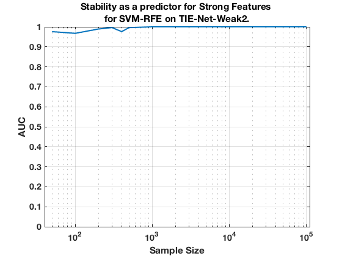

TIE-Net-Weak2. Summary. SVM-RFE.
summary_stability_type("ErrNet", 2)
TOTAL COUNTS: Total=1327, Strong=23, Weak=1300, Irrelevant=4
Figure 121. Stability as a predictor for Strong Features for SVM-RFE on TIE-Net-Weak2.
_______________________________________________________________________________________

Table 121. Breakdown of Stability by Feature Type for SVM-RFE.
_______________________________________________________________
(1) Number Features Repeat (n_fs_rep): number of unique features that were selected in a repeat
(2) Number Features Fold (n_fs_fold): number of unique features that were selected in a fold
(3) Feature Stability ~ Feature Selection Frequency
Sample_Size All_n_fs_rep All_n_fs_fold All_Stability
___________ _______________________ _____________________ ___________________
' 50 ' ' 54.480 +/- 1.898 ' ' 6.338 +/- 0.204 ' ' 0.005 +/- 0.008 '
' 100 ' ' 53.380 +/- 4.211 ' ' 6.004 +/- 0.423 ' ' 0.005 +/- 0.010 '
' 200 ' ' 49.640 +/- 2.233 ' ' 5.820 +/- 0.226 ' ' 0.004 +/- 0.016 '
' 300 ' ' 108.800 +/- 5.139 ' ' 12.236 +/- 0.550 ' ' 0.009 +/- 0.018 '
' 400 ' ' 66.480 +/- 2.984 ' ' 7.892 +/- 0.302 ' ' 0.006 +/- 0.020 '
' 500 ' ' 78.840 +/- 5.281 ' ' 9.220 +/- 0.533 ' ' 0.007 +/- 0.021 '
' 1000 ' ' 107.600 +/- 5.553 ' ' 13.100 +/- 0.578 ' ' 0.010 +/- 0.027 '
' 2000 ' ' 96.680 +/- 4.213 ' ' 14.232 +/- 0.434 ' ' 0.011 +/- 0.040 '
' 5000 ' ' 50.940 +/- 0.409 ' ' 17.374 +/- 0.076 ' ' 0.013 +/- 0.076 '
' 10000 ' ' 52.620 +/- 0.428 ' ' 23.976 +/- 0.077 ' ' 0.018 +/- 0.108 '
' 100000 ' ' 47.280 +/- 0.430 ' ' 24.068 +/- 0.060 ' ' 0.018 +/- 0.122 '
Sample_Size Strong_n_fs_rep Strong_n_fs_fold Strong_Stability
___________ _____________________ _____________________ ___________________
' 50 ' ' 5.760 +/- 0.095 ' ' 0.960 +/- 0.015 ' ' 0.042 +/- 0.041 '
' 100 ' ' 5.140 +/- 0.100 ' ' 1.058 +/- 0.015 ' ' 0.046 +/- 0.062 '
' 200 ' ' 8.160 +/- 0.134 ' ' 1.586 +/- 0.016 ' ' 0.069 +/- 0.094 '
' 300 ' ' 8.700 +/- 0.147 ' ' 1.888 +/- 0.021 ' ' 0.082 +/- 0.112 '
' 400 ' ' 8.700 +/- 0.128 ' ' 2.044 +/- 0.020 ' ' 0.089 +/- 0.118 '
' 500 ' ' 8.560 +/- 0.120 ' ' 2.152 +/- 0.020 ' ' 0.094 +/- 0.133 '
' 1000 ' ' 12.460 +/- 0.144 ' ' 3.344 +/- 0.038 ' ' 0.145 +/- 0.155 '
' 2000 ' ' 17.680 +/- 0.114 ' ' 5.368 +/- 0.040 ' ' 0.233 +/- 0.196 '
' 5000 ' ' 21.560 +/- 0.053 ' ' 12.494 +/- 0.059 ' ' 0.543 +/- 0.197 '
' 10000 ' ' 22.840 +/- 0.013 ' ' 18.800 +/- 0.039 ' ' 0.817 +/- 0.115 '
' 100000 ' ' 22.960 +/- 0.004 ' ' 21.202 +/- 0.004 ' ' 0.922 +/- 0.171 '
Sample_Size Weak_n_fs_rep Weak_n_fs_fold Weak_Stability
___________ _______________________ _____________________ ___________________
' 50 ' ' 48.540 +/- 1.835 ' ' 5.354 +/- 0.200 ' ' 0.004 +/- 0.004 '
' 100 ' ' 48.140 +/- 4.121 ' ' 4.936 +/- 0.412 ' ' 0.004 +/- 0.002 '
' 200 ' ' 41.420 +/- 2.129 ' ' 4.228 +/- 0.215 ' ' 0.003 +/- 0.005 '
' 300 ' ' 100.000 +/- 5.018 ' ' 10.338 +/- 0.533 ' ' 0.008 +/- 0.006 '
' 400 ' ' 57.780 +/- 2.879 ' ' 5.848 +/- 0.289 ' ' 0.004 +/- 0.006 '
' 500 ' ' 70.120 +/- 5.190 ' ' 7.052 +/- 0.520 ' ' 0.005 +/- 0.003 '
' 1000 ' ' 94.980 +/- 5.467 ' ' 9.740 +/- 0.555 ' ' 0.007 +/- 0.005 '
' 2000 ' ' 78.900 +/- 4.165 ' ' 8.854 +/- 0.429 ' ' 0.007 +/- 0.009 '
' 5000 ' ' 29.380 +/- 0.389 ' ' 4.880 +/- 0.057 ' ' 0.004 +/- 0.012 '
' 10000 ' ' 29.780 +/- 0.429 ' ' 5.176 +/- 0.079 ' ' 0.004 +/- 0.012 '
' 100000 ' ' 24.320 +/- 0.429 ' ' 2.866 +/- 0.057 ' ' 0.002 +/- 0.005 '
Sample_Size Irrelevant_n_fs_rep Irrelevant_n_fs_fold Irrelevant_Stability
___________ ___________________ ____________________ ____________________
' 50 ' ' 0.180 +/- 0.010 ' ' 0.024 +/- 0.001 ' ' 0.006 +/- 0.002 '
' 100 ' ' 0.100 +/- 0.012 ' ' 0.010 +/- 0.001 ' ' 0.003 +/- 0.001 '
' 200 ' ' 0.060 +/- 0.006 ' ' 0.006 +/- 0.001 ' ' 0.002 +/- 0.001 '
' 300 ' ' 0.100 +/- 0.012 ' ' 0.010 +/- 0.001 ' ' 0.003 +/- 0.001 '
' 400 ' ' 0.000 +/- 0.000 ' ' 0.000 +/- 0.000 ' ' 0.000 +/- 0.000 '
' 500 ' ' 0.160 +/- 0.016 ' ' 0.016 +/- 0.002 ' ' 0.004 +/- 0.000 '
' 1000 ' ' 0.160 +/- 0.016 ' ' 0.016 +/- 0.002 ' ' 0.004 +/- 0.000 '
' 2000 ' ' 0.100 +/- 0.012 ' ' 0.010 +/- 0.001 ' ' 0.003 +/- 0.001 '
' 5000 ' ' 0.000 +/- 0.000 ' ' 0.000 +/- 0.000 ' ' 0.000 +/- 0.000 '
' 10000 ' ' 0.000 +/- 0.000 ' ' 0.000 +/- 0.000 ' ' 0.000 +/- 0.000 '
' 100000 ' ' 0.000 +/- 0.000 ' ' 0.000 +/- 0.000 ' ' 0.000 +/- 0.000 '